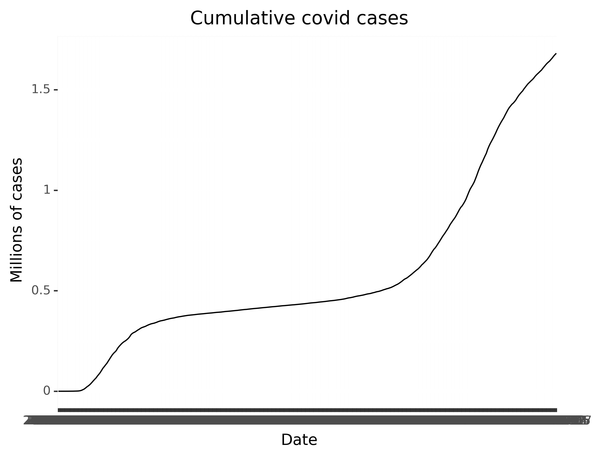
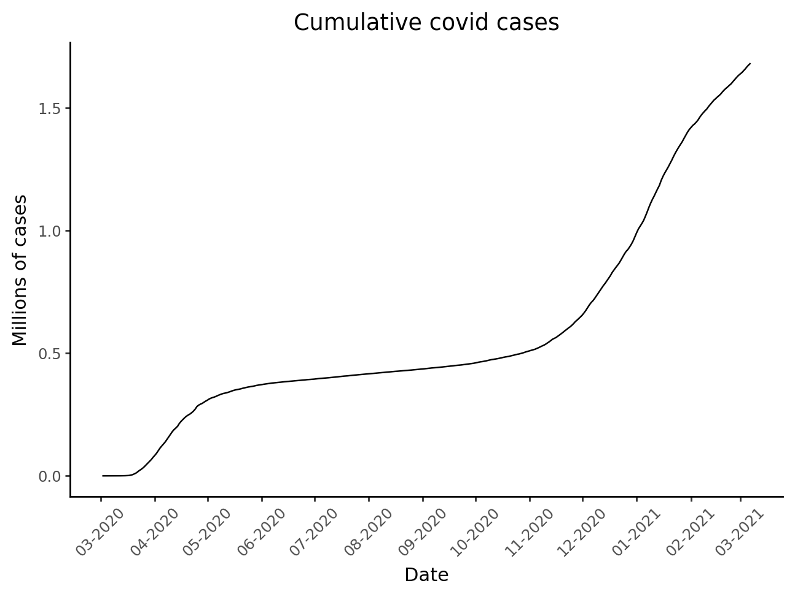

In this milestone, you’ll create a new variable that calculates the cumulative number of cases and deaths across states.
Recreation
Part 1 - Import
Before you begin, you will need to import your data set. Use the code chunk below to read the data from the data file covid.csv, which is stored in the data/ folder in your working directory. Be sure to save the data set to a variable named covid.
Your task is to use what you’ve learned to transform covid into this table. You will need to:
Subset covid for records where the state is NY and save the result as a new data set named subset. Continue to work with subset.
Create a new column named cumul_cases, which contains the result of .cumsum().
Create a new column named cumul_deaths, which contains the result of .cumsum().
Work in the code chunk below.
help(pd.DataFrame.cumsum)
Help on function cumsum in module pandas.core.frame:
cumsum(self, axis: 'Axis | None' = None, skipna: 'bool' = True, *args, **kwargs)
Return cumulative sum over a DataFrame or Series axis.
Returns a DataFrame or Series of the same size containing the cumulative
sum.
Parameters
----------
axis : {0 or 'index', 1 or 'columns'}, default 0
The index or the name of the axis. 0 is equivalent to None or 'index'.
For `Series` this parameter is unused and defaults to 0.
skipna : bool, default True
Exclude NA/null values. If an entire row/column is NA, the result
will be NA.
*args, **kwargs
Additional keywords have no effect but might be accepted for
compatibility with NumPy.
Returns
-------
Series or DataFrame
Return cumulative sum of Series or DataFrame.
See Also
--------
core.window.expanding.Expanding.sum : Similar functionality
but ignores ``NaN`` values.
DataFrame.sum : Return the sum over
DataFrame axis.
DataFrame.cummax : Return cumulative maximum over DataFrame axis.
DataFrame.cummin : Return cumulative minimum over DataFrame axis.
DataFrame.cumsum : Return cumulative sum over DataFrame axis.
DataFrame.cumprod : Return cumulative product over DataFrame axis.
Examples
--------
**Series**
>>> s = pd.Series([2, np.nan, 5, -1, 0])
>>> s
0 2.0
1 NaN
2 5.0
3 -1.0
4 0.0
dtype: float64
By default, NA values are ignored.
>>> s.cumsum()
0 2.0
1 NaN
2 7.0
3 6.0
4 6.0
dtype: float64
To include NA values in the operation, use ``skipna=False``
>>> s.cumsum(skipna=False)
0 2.0
1 NaN
2 NaN
3 NaN
4 NaN
dtype: float64
**DataFrame**
>>> df = pd.DataFrame([[2.0, 1.0],
... [3.0, np.nan],
... [1.0, 0.0]],
... columns=list('AB'))
>>> df
A B
0 2.0 1.0
1 3.0 NaN
2 1.0 0.0
By default, iterates over rows and finds the sum
in each column. This is equivalent to ``axis=None`` or ``axis='index'``.
>>> df.cumsum()
A B
0 2.0 1.0
1 5.0 NaN
2 6.0 1.0
To iterate over columns and find the sum in each row,
use ``axis=1``
>>> df.cumsum(axis=1)
A B
0 2.0 3.0
1 3.0 NaN
2 1.0 1.0
Run the following code chunk to test whether your table matches the solution:
# If your answer is correct, the comparison should return an empty DataFrame.subset.reset_index(drop=True).compare(solution)
Part 2b - Manipulate columns
Your task is to create two new columns, cumul_cases_millions and cumul_deaths_millions that contain the values from cumul_cases and cumul_deaths divided by 1000000. This will make the values easier to interpret when we plot them later.
Your task is to recreate the following plot using your updated version of subset.

To see a larger version of the image, navigate to the images/ directory in the Files pane, then click on milestone03.png.
Use the chunk below to recreate this plot.
# Remember that all required packages have already been installed for you,# but you will need to import the ones you want to use. As a best practice when# working within a Quarto document like this one, import any packages you# need within the code chunk labeled `setup` at the top of the file.import plotnine as p9from plotnine import ggplot, aes, geom_line, scale_x_datetime,theme_classic, labs, theme, element_textfrom mizani.breaks import date_breaksfrom mizani.formatters import date_format(ggplot(subset, aes(y='cumul_cases_millions', x='date')) + geom_line(group=1) + theme_classic() + scale_x_datetime(breaks=date_breaks("1 months"), labels=date_format("%m-%Y")) + labs(title='Cumulative covid cases', y='Millions of cases', x='Date') + theme( axis_text_x = element_text(rotation=45)))

Extension
Using the code chunk below, investigate a research question about this data, using the additional data wrangling skills you learned this week. Some ideas:
Milestone 2 focused on patterns in case counts and deaths over time, within New York. What patterns do you see in the ratio of deaths to case counts, over time, within New York and elsewhere? (Compare with states of your choosing.)
Based on either case numbers or deaths, divide this data into groups of your choosing (e.g. low/medium/high, above/below a national average, etc.) and explore patterns based on these groups.
[any other research question of interest]
Alternately, working with a data set of your own, complete the following:
Read in your data
Create at least one new variable in your data set using mathematical operations
Use your updated data set to create at least one graph and/or table
# What is the pattern from deaths-cases ratio on time for the top six states with more deaths?import plotnine as p9from plotnine import ggplot, aes, geom_line, scale_x_datetime, theme_classic, labs, theme, element_text, facet_wrapfrom mizani.breaks import date_breaksfrom mizani.formatters import date_formatcovid = pd.read_csv('data/covid.csv')# which six states had more deaths?sum_deaths_ordered = covid. \groupby('state'). \sum('deaths'). \sort_values('deaths', ascending=False)# get the six state list top_six = sum_deaths_ordered.head(6).index.values.tolist()# filtercovid = covid.loc[covid.state.isin(top_six)]# remove NA and negative values covid = covid.dropna()subset = covid.loc[(covid['deaths'] >=0) & (covid['cases'] >=0)]# create new column = deaths/cases ratiosubset['cases_death_ratio'] = (subset['deaths'] / subset['cases'])subset['state'] = pd.Categorical(subset['state'], categories=top_six, ordered=True)# plot(ggplot(subset, aes(x='date')) + geom_line(aes(y='cases_death_ratio', group='state', color='state')) + facet_wrap('state') + theme_classic() + scale_x_datetime(breaks=date_breaks("3 months"), labels=date_format("%m-%Y")) + labs(y='Deaths/Cases', x='Date') + theme( axis_text_x = element_text(rotation=45))).show()